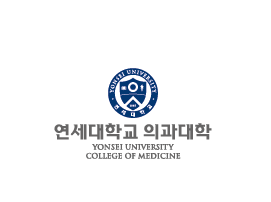
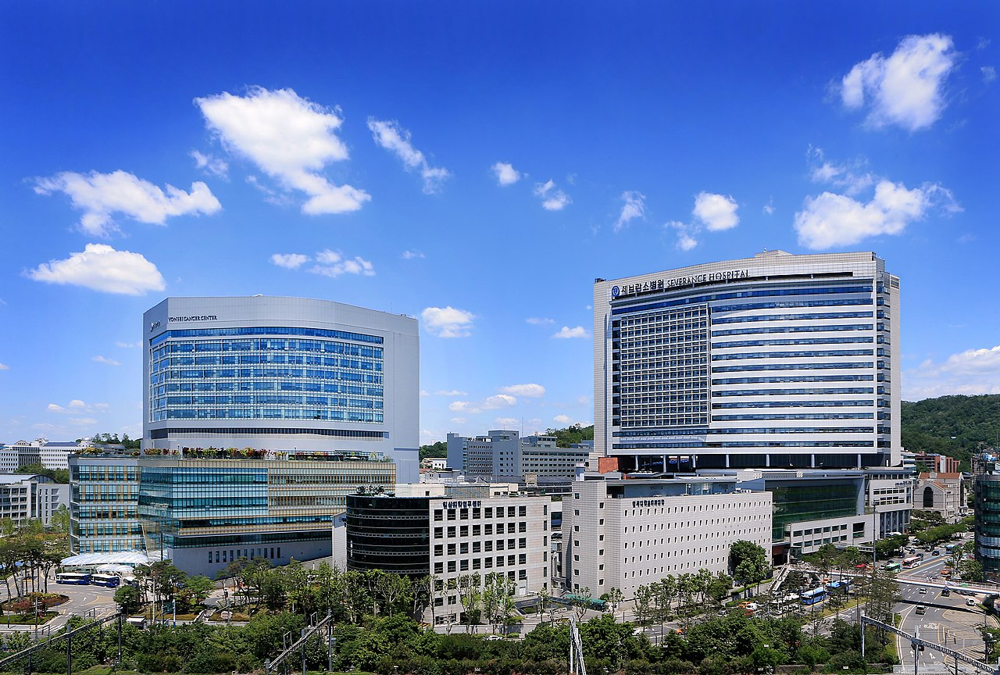

News
-
2026-032026년도 우수연구-신진연구(유형B) 과제 최종 선정!
우리 연구실(OMAEL)이 2026년 3월부터 시작되는 한국연구재단 우수연구-신진연구(유형B, 4년/6억 원) 과제에 최종 선정되었습니다. (Funds & Projects) 이번 선정과 연세대학교 의과대학에서 전폭적으로 지원해주는 신임 교원 연구 정착 과제들을 통해, 새롭게 합류할 팀원들과 함께 "견고한 공학 이론 기반 고난도 임상 의사 결정을 위한 해석 가능한 의료 인공지능 학습 기법 개발" 연구를 본격적으로 수행해나갈 예정입니다. 연구실의 성장을 지원해주신 모든 분께 감사드리며, 혁신적인 연구 성과로 보답하겠습니다.
-
2026-03New Office Location!
Our team has officially moved into a new office space within the College of Medicine at Yonsei University. This new location will serve as our primary hub for research and collaboration.
- Location: Department of Biomedical Systems Informatics, College of Medicine, Yonsei University
- Address: 의과대학 신관 6층, 50-1 Yonsei-ro, Seodaemun-gu, Seoul, Korea
- Tel: 82-2-2228-2500
- Email: yujinoh@yuhs.ac



-
2026-01Recruitment!
We are seeking highly motivated students and fellows to join our research team. Our lab offers a unique, collaborative environment with opportunities to work closely with world-leading medical institutions:
- Yonsei Severance Hospital, Seoul, Korea
- Massachusetts General Hospital, MA, USA
- Inselspital, Bern, Switzerland
As part of our ongoing global projects, qualified candidates may also be eligible for Visiting Scholar positions at Harvard Medical School in Boston.
For further details, please email me with your CV, research motivation, intended timeline and academic transcripts (Undergraduate and graduate, if applicable):
yujinoh@yuhs.ac; yjoh12@gmail.com